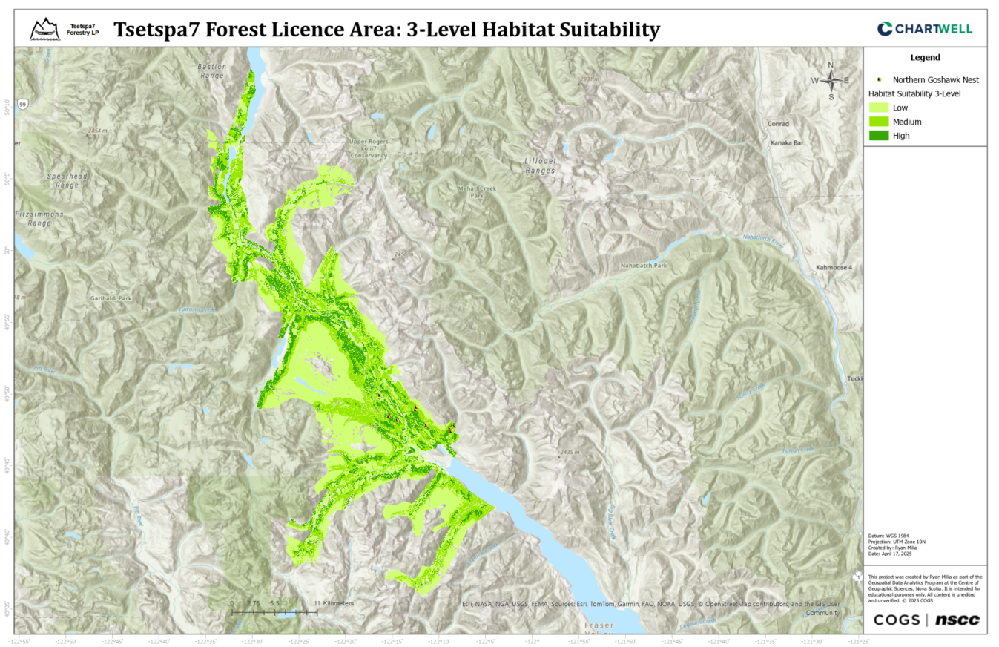

MaxEnt Habitat Model
This project developed a habitat suitability model for the Northern Goshawk (Accipiter gentilis) in the Tsetspa7 Forest Licence area, British Columbia, to support conservation efforts through advanced geospatial analysis. The study integrated Light Detection and Ranging (LiDAR), Vegetation Resource Inventory (VRI), and Geographic Information Systems (GIS) with Maximum Entropy (MaxEnt) modelling to identify critical habitat characteristics and predict high-suitability areas.
Background
The Northern Goshawk (Accipiter gentilis) relies on mature and old-growth forests for nesting and foraging, making it vulnerable to habitat loss from logging and forest management practices. This project employed MaxEnt habitat suitability modeling to map critical habitat features in the Tsetspa7 Forest Licence area. By leveraging advanced geospatial techniques and GIS, the study produced detailed suitability maps to inform conservation and sustainable forest management.
Study Area
The study area is the Tsetspa7 Forest Licence, located within the Sea to Sky Forest District. The project site is north of Harrison Lake, extending east of Golden Ears Provincial Park and southeast of Lillooet Lake, in the lower Lillooet River valley. Access to the area is via Duffey Lake Road (Highway 99) and the Lillooet River Forest Service Road (FSR). Figure 1 shows the geographic extent of the licence area.
Data Processing
Environmental variables for the Northern Goshawk habitat suitability model were derived from LiDAR and VRI data. LiDAR data were processed to create two DEMs and DSMs, generating Canopy Height Models (CHMs) via the "LAS Dataset to Raster" and "Calculate Raster" tools. These were merged, reprojected to NAD 1983 UTM Zone 10N, and clipped to the project boundary. VRI data provided classification variables: Forest Type (Coniferous, Deciduous, Unknown), Crown Closure (Low, Medium, High), Stand Age (Young, Mature, Old Growth), and BEC Zone (High or Low Suitability). All variables were rasterized to 5m resolution for consistency.
Canopy Height Model
BEC Suitability
MaxEnt Modelling
Three MaxEnt models were developed in RStudio and documented in markdown notebooks. Model 1 (tsetspa7_model) used 12 occurrence points, Model 2 (tsetspa7_synthetic_model) expanded to 212 points (200 synthetic). Model 3 (tsetspa7_model_v2) used 23 occurrence points and incorporated the full extent of available LiDAR data across the project area. All models balanced fit and predictive power, with regularization minimizing overfitting while preserving ecologically relevant patterns.
Code Snippet
## Run the MaxEnt Model with Leave-One-Out Cross-Validation (LOOCV)
# Define predictors for MaxEnt
predictors_df_clean <- all_data_clean[, c("chm", "dem", "forest_type", "stand_age")]
presence_clean <- all_data_clean$presence
# Leave-One-Out Cross-Validation (LOOCV)
set.seed(123)
loo_predictions <- numeric(23)
presence_idx <- which(all_data_clean$presence == 1)
for (i in 1:23) {
test_idx <- presence_idx[i]
train_data <- all_data_clean[-test_idx, ]
test_data <- all_data_clean[test_idx, , drop = FALSE]
predictors_train <- train_data[, c("bec_suitability", "chm", "dem", "forest_type", "stand_age")]
presence_train <- train_data$presence
predictors_test <- test_data[, c("bec_suitability", "chm", "dem", "forest_type", "stand_age")]
maxent_model <- maxnet(
p = presence_train,
data = predictors_train,
regmult = 2,
f = maxnet.formula(presence_train, predictors_train, classes = "l")
)
loo_predictions[i] <- predict(maxent_model, predictors_test, type = "logistic")
}
# Train final model on all data
maxent_model <- maxnet(
p = presence_clean,
data = predictors_df_clean,
regmult = 2,
f = maxnet.formula(presence_clean, predictors_df_clean, classes = "l")
)
Model Performance
MaxEnt models were validated using a 70/30 train-test split, LOOCV, and K-Fold CV:
- Model 1 (12 points): LOOCV AUC = 0.9182; limited by small dataset.
- Model 2 (212 points): LOOCV AUC = 0.9567, K-Fold AUC = 0.9500; excellent generalization.
- Model 3 (23 points): LOOCV AUC = 0.8268, K-Fold AUC = 0.8275; does not rely on synthetic data.
Habitat Suitability Maps
The habitat suitability maps showed distinct spatial patterns for Northern Goshawk habitat across the Tsetspa7 Forest Licence area. Model 1, based on 12 points, predicted 38.58% high-suitability habitat but was influenced by limited data. Model 2, using 212 points (including synthetic data), produced a more balanced distribution with 18.44% high suitability. Model 3, using 23 original points and full LiDAR coverage, was the most conservative, identifying only 15.68% as high suitability but offering the most detailed spatial representation. Across models, suitability strongly aligned with BEC zone (CWH/MH), coniferous forest type, and mature/old-growth stands. The final map from Model 3 provides the most accurate delineation of potential habitat.
Final Habitat Suitability
Conclusion
This project successfully developed habitat suitability models for the Northern Goshawk in the Tsetspa7 Forest Licence area through the integration of LiDAR, VRI, and MaxEnt modeling techniques. Among the three models developed, Model 3 emerged as the preferred approach despite its lower AUC (0.8275) compared to Models 1 and 2. Its preference stems from its utilization of comprehensive LiDAR coverage across the entire project area and its reliance on a larger set of original occurrence points (23), providing the most spatially complete and biologically relevant habitat characterization. The resulting suitability maps classify 15.68% of the study area as high suitability, 28.95% as medium suitability, and 55.37% as low suitability, offering a conservative but precise delineation of potential Northern Goshawk habitat. The methodology developed and insights gained aim to contribute to the long-term conservation of the Northern Goshawk in British Columbia, demonstrating the value of integrated geospatial analysis in species conservation efforts.